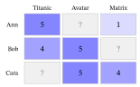
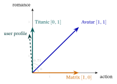
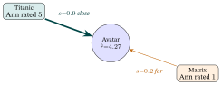
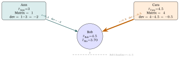
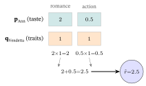
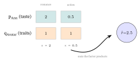
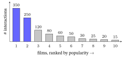
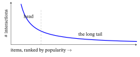

7 Traditional Recommender Systems
What this chapter is for. Before graphs and large language models (LLMs, the text-generating models behind today’s chatbots), recommendation was already a mature field. This chapter builds the classical recommenders from zero: content-based filtering, collaborative filtering (CF) (memory-based and model-based), and matrix factorization. The modern chapters descend from them. Matrix factorization’s latent vectors (a short list of learned numbers for every user and every item, built in §5) are the embeddings (the book’s word for such learned vectors) that the next chapters build on. From Graphs to LightGCN propagates them on a graph; LightGCN is a graph-based recommender that refines those vectors by passing them along the links between users and the items they touched. And content features are what an LLM supplies in Self-Supervised & Contrastive Learning.
What this chapter assumes. The dot product and cosine similarity (Linear-Algebra primer §4) and, from §5 on, the slope of a curve and stepping downhill along it (Calculus primer §1 and §5), the chain rule (Calculus primer §3), the matrix inverse (Linear-Algebra primer §2) and a plain reading of overfitting (Neural Networks & Back-propagation §7); each is restated where it is used. Not assumed: any earlier recommender-system knowledge, or more than a one-line gloss of a neural network (§5.5). It pairs well with Loss Functions & Regularizers (the losses that train matrix factorization, among them Bayesian Personalized Ranking, BPR).
1. The problem and the user–item matrix
Ann, Bob and Cara have each rated a few of the same three films. Which one should Ann watch next? To answer, their ratings have to sit in one shared table, and most of a real table is blank; this section builds it and names the difficulty that follows.
A recommender predicts which items a user will like. The data is the user–item matrix \(R\) (the interaction or rating matrix from the Linear-Algebra primer): rows = users, columns = items, entries = explicit ratings (a deliberately stated \(1\)–\(5\)) or implicit feedback (a \(1\) where the user clicked / played / bought, inferred from behavior; every other cell is left blank — unknown, not a dislike; if Ann played Titanic, her Titanic cell is a \(1\) and her Matrix cell stays blank).
? marks the unobserved entries the recommender must predict.
| Titanic | Vendetta | Matrix | |
|---|---|---|---|
| Ann | 5 | ? | 1 |
| Bob | 4 | 5 | ? |
| Cara | ? | 5 | 4 |
The defining feature of real data: \(R\) is mostly unknown (?) — each user touches a tiny slice of the catalog. Recommendation = fill in the blanks (predict the ?s) and rank the top ones.
Two symbols carry through the whole chapter: \(r_{ui}\) is user \(u\)’s known rating of item \(i\) (for example \(r_{\text{Ann,Titanic}}=5\)), and \(\hat r_{ui}\) (read “r-hat”) is a predicted rating — the hat always marks an estimate. Our three blanks are exactly the cells that need an \(\hat r\): Ann–Vendetta, Bob–Matrix and Cara–Titanic.
How empty is “mostly”? Even this \(3\times3\) toy is one-third blank. Real matrices are far emptier: MovieLens-20M (ML-20M for short — a public research dataset of 20 million movie ratings collected by MovieLens, a movie-recommendation service) has \(138{,}493\) users \(\times\;27{,}278\) movies \(=\) 3.8 billion cells but only 20 million ratings — 99.5% empty. This extreme sparsity is the central difficulty: you must predict an ocean of blanks from a few islands of data.
Why “recommender system.” It recommends items. The two classical families answer the blanks differently: content-based (“more items like the ones you liked”) and collaborative (“items liked by people like you”). The names say exactly what each uses.
Explicit vs implicit feedback — and why the difference shapes everything. Write \(N\) for the number of users and \(M\) for the number of items (so \(R\) is \(N\times M\)). Each known entry is one of two kinds:
- Explicit: the user stated a score — a \(1\)–\(5\) rating, a thumbs up/down. You learn both what they like and what they dislike.
- Implicit: the score is inferred from behavior — clicked / played / bought \(\to 1\), otherwise blank. This is far more common — every click is free and ratings are rare (a claim from practice, not tested here).
The catch behind many modern ranking losses: implicit feedback gives positives only. A movie a user didn’t click is not a confirmed dislike — it may simply be one they never saw. So implicit data has no true negatives; an unobserved cell is unknown, not zero. That single fact is why ranking losses like Bayesian Personalized Ranking (BPR) (Rendle et al., 2009; Loss Functions & Regularizers §9) exist — instead of treating every blank as a \(0\) to fit, they only ask that an observed item rank above a randomly sampled unobserved one. Keep this split in mind: §2–§4 illustrate with explicit ratings (easier to read by hand), but the chapters that follow — on graph-based models and on large language models (LLMs) — are almost all implicit.
In one line: a recommender fills in the blanks of the user–item matrix \(R\): the toy has \(3\) of \(9\) cells blank, ML-20M has \(99.5\%\) blank (\(20\) million ratings in \(3.8\) billion cells), and implicit feedback gives positives only, with no true negatives.
2. Content-based filtering
Ann loved Titanic, and she has not seen Vendetta. Can anyone say whether she would like it without asking other viewers? Yes, if every film is described by what is in it and we look for films that resemble her favorite. This section builds that description and a number for “resembles”.
Content-based filtering uses item features (the “content”): genres, tags, the text of a description (as a TF-IDF vector — term-frequency × inverse-document-frequency, which up-weights words distinctive to an item and down-weights ubiquitous ones like “the”; its idf half comes from Spärck Jones, 1972), etc. Represent each item as a feature vector, build a user profile by aggregating the features of items the user liked (Ann liked only Titanic, so her profile is just Titanic’s vector, worked below), and recommend items whose vector is most similar — by cosine similarity (Linear-Algebra primer §4).
Why “content-based.” It recommends from the content (attributes) of the items themselves, never needing anyone else’s behavior.
A tiny TF-IDF (turning text into a feature vector). Treat three movie blurbs as our “documents.” The word alien appears in just \(1\) of the \(3\) (rare, so distinctive), romance in \(2\) of \(3\) (common). The inverse document frequency is \(\operatorname{idf}=\log_{10}(N_{\text{doc}}/\mathrm{df})\), where \(N_{\text{doc}}\) is the number of documents (here the \(3\) blurbs) and \(\mathrm{df}\), the document frequency, is how many of them contain the word (\(1\) for alien, \(2\) for romance).
It gives \(\operatorname{idf}(\textit{alien})=\log_{10}(3/1)=0.48\) versus \(\operatorname{idf}(\textit{romance})=\log_{10}(3/2)=0.18\), so at equal raw counts alien carries \(\tfrac{0.48}{0.18}\approx2.7\times\) the weight, while a word found in every blurb, like the, gets \(\log_{10}(3/3)=0\). We use base \(10\), a common convention; any fixed base multiplies every idf by the same factor, leaving this ratio, and any cosine, unchanged.
Multiplying each word’s count (term frequency) by its idf gives the item’s TF-IDF vector. A blurb that says alien twice, romance once and the five times gets, with the rounded idf values above, the entries \(2\times0.48=0.96\), \(1\times0.18=0.18\) and \(5\times0=0\): the rare word dominates and the ubiquitous one vanishes. The genre vectors just below are a hand-simplified stand-in for such a feature vector.
Worked example — on our three movies — Titanic, V for Vendetta (Vendetta for short) and The Matrix. Describe each by a genre vector over (action, sci-fi, romance): \[ \text{Titanic}=[0,0,1],\qquad \text{Vendetta}=[1,1,1],\qquad \text{Matrix}=[1,1,0]. \]
Ann loved Titanic (\(5\) in §1) — a romance. How well does each other movie match that taste?
\[ \begin{gathered} \cos(\text{Titanic},\text{Vendetta})=\frac{(0)(1)+(0)(1)+(1)(1)}{\sqrt1\,\sqrt3}=\frac{1}{\sqrt3}\approx0.58,\\[6pt] \cos(\text{Titanic},\text{Matrix})=\frac{0}{\sqrt1\,\sqrt2}=0. \end{gathered} \]
Per component: the numerator is the dot product — it counts shared genres (Titanic and Vendetta both carry romance \(\to 1\); Titanic and Matrix share none \(\to 0\)); the denominators \(\sqrt{\cdot}\) are the two vectors’ lengths, dividing out so only the angle (taste overlap), not how many genres a movie has, is measured. So a content recommender predicts Ann will like Vendetta (it shares romance, \(0.58\)) but not Matrix (\(0\) — pure action/sci-fi) — which matches her actual low rating of Matrix (\(1\) in §1). It needed no other user, only the movies’ features. The figure below draws this on a two-genre plane: Ann’s profile and each film are arrows, and the angle between two arrows is what the cosine measures.

Aggregating a user profile. Ann liked only Titanic, so her profile is simply Titanic’s vector \([0,0,1]\) (the dashed arrow above). A user who likes more than one movie gets a profile that is their average. Someone who loved Titanic \([0,0,1]\) and Vendetta \([1,1,1]\) has profile \(\tfrac12([0,0,1]+[1,1,1])=[0.5,\,0.5,\,1]\) — still romance-heavy, but now open to action and sci-fi. The recommender then scores items against that blend: Matrix \([1,1,0]\) gets \(\cos=\frac{(0.5)(1)+(0.5)(1)+(1)(0)}{\sqrt{1.5}\,\sqrt2}=\frac{1}{\sqrt3}\approx0.58\). It is the profile, not any single movie, that a content recommender matches against — that aggregation is what makes “content-based” personal.
Strengths / weaknesses. No “other users” needed, so it handles a new item the moment it has features — it avoids the item cold-start problem (a brand-new item has no ratings yet for the other methods to use; §7); but it tends to over-specialize (only ever recommends near-copies of what you already saw; a claim from practice, not tested here) and needs good features.
In one line: describe each item by features, average the liked items into a profile, and rank by cosine: Ann’s profile \([0,0,1]\) scores Vendetta \(0.58\) and Matrix \(0\), with no other user needed.
3. Collaborative filtering — the idea
Ann has not seen Vendetta, but Bob has, and he gave it a 5. Should she trust him? It depends on whether the two of them have agreed before. This section states that habit as a premise that uses nothing but the table of ratings; §4 turns it into numbers.
Collaborative filtering (CF) ignores item content and uses only the interaction matrix \(R\) — the “wisdom of the crowd.” The premise (the same one From Graphs to LightGCN later mechanizes on a graph):
If Ann and Bob agreed on the movies they have both seen, then Ann will probably like the other movies Bob liked.
In our toy, Ann and Bob have rated exactly one film in common, Titanic, and their ratings are \(5\) and \(4\), one star apart. Bob also gave Vendetta a \(5\), a film Ann has not seen, so the premise says to expect Ann to like it too. How much to trust that evidence is what §4 measures.
Why “collaborative.” Users implicitly collaborate — your ratings help recommend to others, theirs help recommend to you. The name comes from Tapestry, an experimental e-mail system at Xerox’s Palo Alto Research Center (PARC), whose designers defined collaborative filtering as people helping one another filter by recording their reactions to the documents they read (Goldberg et al., 1992). Two flavors: memory-based, §4, computes on the raw matrix at query time; these are the \(k\)-nearest-neighbor (\(k\)-NN) methods. Model-based, §5, learns a compact model first.
In one line: collaborative filtering uses only \(R\); Ann and Bob co-rated one film, a star apart (\(5\) against \(4\)), so Bob’s \(5\) for Vendetta is the evidence for Ann’s blank, which memory-based methods compute from \(R\) at query time and model-based methods learn a compact model for.
4. Memory-based CF: user- and item-based \(k\)-NN
To guess Ann’s rating of Vendetta, you could ask who is most like her and average their ratings, or ask which film is most like Vendetta and average her ratings of those, counting the closer ones more. This section turns both questions into arithmetic and predicts two blanks by hand.
Memory-based CF predicts a missing rating from the most similar rows or columns of \(R\) — its nearest neighbors. Using only the \(k\) most similar ones is the \(k\)-nearest-neighbor (\(k\)-NN) method that names this section.
- User-based: to predict Ann’s rating of an item, find users most similar to Ann (by cosine, or by Pearson correlation — a cosine computed after subtracting each user’s average rating, defined below — of their shared ratings) and take a similarity-weighted average of their ratings of that item (the approach of Resnick et al., 1994, in a news-filtering system).
- Item-based: find items most similar to the target item (by their rating columns) and average the user’s ratings of those items (Sarwar et al., 2001, who found it more accurate than user-based on MovieLens data).
Both are worked by hand below: item-based for Ann’s Vendetta (in one line: the illustrative similarities \(0.9\) and \(0.2\) weight her ratings \(5\) and \(1\) into \(4.27\)), user-based for Bob’s Matrix.
Which side is steadier? A rule of thumb from practice, not tested here: item-based is steadier when items are fewer than users, because each item column then holds more ratings, so each item–item similarity rests on more co-raters (users who rated both items) and is less at the mercy of chance. ML-20M is that case: \(27\)k movies against \(138\)k users (§1) works out to about \(733\) ratings per movie column against \(144\) per user row. So is Amazon’s item-to-item recommender, built for more than 29 million customers and several million catalog items (Linden, Smith & York, 2003). The rule flips when the catalog dwarfs the audience, as in a marketplace of millions of niche products and far fewer shoppers: there the user rows hold more ratings.
Why “memory-based,” “\(k\)-NN,” “neighborhood.” It keeps the whole rating matrix in memory and compares at query time. \(k\)-NN = \(k\) nearest neighbors: use the \(k\) most-similar rows/columns — the item’s (or user’s) neighborhood.
Let \(s_{ij}\in[-1,1]\) denote the similarity between items \(i\) and \(j\) (from one of the measures below, applied to their rating columns). It is symmetric, \(s_{ij}=s_{ji}\): Vendetta is exactly as similar to Titanic as Titanic is to Vendetta. The very same measures, applied instead to two users’ rating rows, give \(s_{uv}\), the similarity between users \(u\) and \(v\) — the form the user-based worked example below uses.
Worked example — item-based prediction by hand. Predict Ann’s Vendetta (her blank ? from §1). Ann rated Titanic \(=5\) and Matrix \(=1\). Suppose — purely for illustration, since this three-user toy is too small to measure them (see below) — that the rating-column similarities of Vendetta to those two are \(s_{\text{V,Ti}}=0.9\) and \(s_{\text{V,Ma}}=0.2\). The similarity-weighted average: \[
\hat r_{\text{Ann,Vendetta}}=\frac{s_{\text{V,Ti}}\,r_{\text{Ann,Ti}}+s_{\text{V,Ma}}\,r_{\text{Ann,Ma}}}{s_{\text{V,Ti}}+s_{\text{V,Ma}}}
=\frac{0.9(5)+0.2(1)}{0.9+0.2}=\frac{4.5+0.2}{1.1}=\boxed{4.27}.
\]
Per component: each rating Ann gave is weighted by how similar that item is to Vendetta, so a close item (Titanic, \(0.9\)) votes far louder than a distant one (Matrix, \(0.2\)). Dividing by the sum of the weights \(s_{\text{V,Ti}}+s_{\text{V,Ma}}\) renormalizes the votes to sum to \(1\), which keeps \(\hat r\) on the \(1\)–\(5\) scale. That guarantee needs positive weights (the box below shows what a negative one does), one reason neighborhood methods usually keep only positively similar neighbors. Notice too that the numerator is itself a dot product: Vendetta’s similarities \([0.9,\,0.2]\) times Ann’s ratings \([5,\,1]\), \(0.9(5)+0.2(1)=4.7\), the same multiply-and-add as the numerator of §2’s cosine.
With these weights, Titanic (\(0.9\), which Ann loved) outvotes Matrix (\(0.2\)), so the prediction lands high (\(4.27\)). The number of neighbors \(k\) is a dial: with \(k=1\) only Titanic votes and the answer is \(\frac{0.9(5)}{0.9}=5.0\); with \(k=2\) both vote, \(4.27\); and letting in more and more weak neighbors pulls the answer toward the plain average of her ratings (\(3.0\) if every weight were equal). The method is intuitive and needs no training, but it scales poorly: all-pairs similarity on ML-20M’s \(138{,}493\) users is about \(9.6\) billion user pairs for user-based \(k\)-NN (the item-based variant compares item pairs: about \(372\) million for ML-20M’s \(27{,}278\) films). It also struggles when the matrix is very sparse (shown below, where every item pair of the 3-user toy has exactly one co-rating user).
What if a similarity is negative? Ann rated Titanic \(5\) and Matrix \(1\). Four cases show what a negative weight does to the weighted average.
case formula result what it shows \(s=[0.9,\,-0.2]\), sum \(\tfrac{0.9(5)-0.2(1)}{0.9-0.2}=\tfrac{4.3}{0.7}\) \(\approx6.1\) off the \(1\) to \(5\) scale same \(s\), \(\lvert s\rvert\) summed \(\tfrac{4.3}{1.1}\) \(\approx3.9\) on the scale here, not cured one neighbor, \(s=-0.5\), rated \(5\) \(\tfrac{(-0.5)(5)}{\lvert-0.5\rvert}\) \(-5\) can fall below \(1\), to \(-5\) \(s=[-0.9,\,0.2]\) (Titanic anti-similar) \(\tfrac{-0.9(5)+0.2(1)}{1.1}\) \(\approx-3.9\) Ann’s numbers go negative On raw ratings a negative similarity also always subtracts, whatever the rating was. Calling Matrix anti-similar to Vendetta drags Ann’s prediction down (dividing by the absolute sum), from \(4.27\) to \(3.9\), even though Matrix is the film she rated a mere \(1\), evidence that should push Vendetta up. Negative similarities behave better once the ratings are mean-centered, which is what the user-based formula below does: centered on Ann’s own mean of \(3\), the same \(s=[0.9,\,-0.2]\) (dividing by \(1.1\)) gives \(3+\frac{0.9(+2)+(-0.2)(-2)}{1.1}=5.0\). Centering does not remove the need to clip to the \(1\) to \(5\) scale: a neighbor with \(s=1\) and deviation \(+2\) above a mean of \(4.5\) gives \(6.5\).
The figure below draws the vote for Ann’s Vendetta blank: the thicker the edge, the more that neighbor’s rating counts.

Where do those similarities come from? From the same cosine as §2, but applied to the items’ rating columns instead of their feature vectors. That is the only difference between content and collaborative similarity: content compares features; collaborative compares who rated what.
Try it on our matrix. On rating columns we compute the cosine over the co-rated users only, the users who rated both items, the same convention as the Pearson row of the table below. Vendetta’s rated column is \((\text{Bob }5,\ \text{Cara }5)\) and Titanic’s is \((\text{Ann }5,\ \text{Bob }4)\); the only user who rated both is Bob, so each length uses Bob’s rating alone and the cosine collapses to a degenerate \(\frac{5\times4}{\sqrt{5^2}\,\sqrt{4^2}}=1\). Treating every blank as a \(0\) instead would give \(\frac{20}{\sqrt{50}\,\sqrt{41}}\approx0.44\); the convention matters, so always say which one you use.
Every item pair in this 3-user toy has exactly one co-rating user, too thin for a meaningful similarity, which is why the worked example used illustrative stand-ins (\(0.9,\,0.2\)). The toy’s own columns cannot rank them at all: with a single co-rating user behind each pair, all three column-cosines come out at exactly \(1\), a three-way tie that orders nothing. Even treating blanks as \(0\) gives the opposite of the stand-in order (\(0.9\) for Titanic, \(0.2\) for Matrix), putting Vendetta’s column closer to Matrix’s, \(0.69\), than to Titanic’s, \(0.44\). On a real, denser matrix the same column-cosine yields meaningful values; practitioners further apply shrinkage (down-weighting similarities backed by few co-ratings; below) to tame this small-overlap problem. Three measures are standard (in them, \(\mathbf u,\mathbf v\) are two rating vectors, the rows or columns being compared, not the users \(u,v\) of \(s_{uv}\)).
| Measure | Formula | Best for |
|---|---|---|
| Cosine | \(\dfrac{\mathbf{u}\cdot\mathbf{v}}{\lVert\mathbf{u}\rVert\,\lVert\mathbf{v}\rVert}\) (on ratings, co-rated entries only; on binary data, each item’s whole audience set) | direction of two vectors; implicit/binary data or features |
| Pearson | cosine of the mean-centered vectors (sums run over the items rated by both users — the co-rated set) | explicit ratings, where users differ in generosity |
| Jaccard | \(\dfrac{\lvert A\cap B\rvert}{\lvert A\cup B\rvert}\) | binary liked-sets (ignores rating values) |
Reading the three by their parts: cosine divides the dot product \(\mathbf u\cdot\mathbf v\) (which fires only where both vectors are nonzero — shared ratings) by the two lengths \(\lVert\mathbf u\rVert\lVert\mathbf v\rVert\), canceling magnitude so only direction survives. Pearson is that same cosine on mean-centered vectors, \[\frac{\sum_i(u_i-\bar u)(v_i-\bar v)}{\sqrt{\sum_i(u_i-\bar u)^2}\,\sqrt{\sum_i(v_i-\bar v)^2}}\] so it compares deviations from each user’s own baseline \(\bar u\), not raw scores. Here \(\bar u\) and \(\bar v\) are taken over the co-rated items, as in the example below; the prediction formula further down centers instead on each user’s mean over everything that user rated, which is a different mean. Jaccard divides \(\lvert A\cap B\rvert\) (items both liked) by \(\lvert A\cup B\rvert\) (items either liked) — the fraction of the combined like-set that overlaps.
Why the names: cosine because the normalized dot product literally equals \(\cos\theta\), the angle’s cosine; Pearson after Karl Pearson (1890s), who formalized the correlation coefficient (statisticians often write it \(r\); this chapter keeps \(r\) for ratings); Jaccard after the botanist Paul Jaccard.
Why Pearson centers. Users rate on different scales — a harsh critic’s \(3\) can mean what a generous one’s \(5\) does. Subtract each user’s mean first. Take two users’ ratings of the same three movies, \(\mathbf u=[5,4,3]\) and \(\mathbf v=[1,2,3]\) (the \(\mathbf u,\mathbf v\) of the formulas above): raw cosine is \(0.83\) (they look aligned — both positive), but centering (means \(4\) and \(2\)) gives \(\mathbf u'=[1,0,-1]\), \(\mathbf v'=[-1,0,1]\) and Pearson \(=-1\): their tastes are actually opposite. Cosine was fooled by shared positivity; Pearson, by removing each user’s baseline, is not — which is why the user-based predictor centers ratings before averaging. Jaccard instead forgets the numbers entirely: for liked-sets \(\{1,2,3\}\) and \(\{2,3,4\}\) it is \(\tfrac{|\{2,3\}|}{|\{1,2,3,4\}|}=\tfrac24=0.5\) — handy for pure click/like data.
Worked example — user-based prediction by hand (with mean-centering). Now predict Bob’s Matrix (his blank from §1) from the users who rated Matrix: Ann (Matrix \(=1\)) and Cara (Matrix \(=4\)). First each user’s own mean (over what they rated): \(\bar r_{\text{Bob}}=\tfrac{4+5}{2}=4.5\), \(\bar r_{\text{Ann}}=\tfrac{5+1}{2}=3\), \(\bar r_{\text{Cara}}=\tfrac{5+4}{2}=4.5\). Suppose — with illustrative similarities again — that Bob is quite like Cara (\(s_{\text{Bob,Cara}}=0.8\) — both adore Vendetta) and mildly like Ann (\(s_{\text{Bob,Ann}}=0.2\)). The mean-centered neighbor formula adds Bob’s own baseline to a similarity-weighted average of deviations: \[ \begin{aligned} \hat r_{\text{Bob,Ma}}&=\bar r_{\text{Bob}}+\frac{\sum_v s_{\text{Bob},v}\,(r_{v,\text{Ma}}-\bar r_v)}{\sum_v s_{\text{Bob},v}}\\[4pt] &=4.5+\frac{0.2\,(1-3)+0.8\,(4-4.5)}{0.2+0.8}=4.5+\frac{-0.8}{1}=\boxed{3.70}. \end{aligned} \]
Per component: each neighbor contributes how far they sat above or below their own average (\(r_{v,\text{Ma}}-\bar r_v\)). Ann rated Matrix \(2\) below her mean and Cara \(0.5\) below hers, so both say “below average for me.” Weighting those deviations (\(0.2,0.8\)), renormalizing (dividing by \(0.2+0.8=1\)), and adding back Bob’s baseline \(4.5\) predicts he too rates Matrix a bit below his average: \(3.70\). With Pearson similarities, which can be negative, implementations divide by the sum of their absolute values instead.
Why center? Without it, a rater whose average is \(4.5\) and one whose average is \(3\) aren’t comparable; centering puts every user on a common “relative to my own taste” scale (exactly the Pearson move above), the move that removes differences in rating scale between users.
Shrinkage — down-weighting similarities backed by few co-ratings. A similarity computed from many shared ratings is reliable; one computed from only one or two co-ratings is not — the formula may return \(0.9\) on sheer chance. Practitioners apply shrinkage to pull such noisy estimates toward \(0\): \[ s_{\text{shrunk}} = s \cdot \frac{n}{n + \kappa}, \]
where \(n\) is the number of co-ratings supporting the similarity (the users who rated both items in item-based CF, or the items rated by both users in user-based CF) and \(\kappa\) (kappa) is a tunable shrinkage constant (values of \(25\)–\(100\) are common: a claim from practice, not tested here). When \(n\) is much larger than \(\kappa\) (written \(n\gg\kappa\)) the factor \(n/(n+\kappa)\) is close to \(1\) and the similarity is used almost as-is; when \(n\) is small the factor is much less than \(1\) and the similarity is pulled toward \(0\).
With \(\kappa=25\) the dial reads:
| co-ratings \(n\) | factor \(\dfrac{n}{n+25}\) | a similarity of \(0.9\) becomes |
|---|---|---|
| \(1\) | \(0.04\) | \(0.03\) |
| \(25\) | \(0.50\) | \(0.45\) |
| \(500\) | \(0.95\) | \(0.86\) |
The factor \(n/(n+25)\) rises steadily and levels off toward \(1\), so three rows bracket the whole curve.
Our toy is the extreme case: every pair shares just one co-rating (\(n=1\)), so its degenerate cosine of \(1\) shrinks to \(1\cdot\frac{1}{1+25}\approx0.04\). The figure below shows the user-based version of the vote, with each user’s ratings centered on her own mean.

In one line: predict a blank as a similarity-weighted average of neighbors’ ratings (Ann’s Vendetta \(4.27\); Bob’s Matrix \(3.70\) after centering on each user’s own mean), and shrink any similarity backed by few co-raters (one co-rating at \(\kappa=25\) turns a cosine of \(1\) into \(0.04\)).
5. Model-based CF: matrix factorization (→ embeddings)
§4’s neighbors compare rows of a mostly blank table at every request, which is slow and rests on few shared ratings. What if each user and each film were summarized once by a short list of learned numbers, and a rating were one multiplication of two lists? This section builds and trains that model.
5.1 The idea: a rating is a dot product
Instead of comparing rows at query time, learn a compact model. Matrix factorization (MF) assumes each user and each item has a short latent-factor vector (\(d\) numbers, learned from the data — the kind of vector the rest of the book calls an embedding), and a rating is their dot product: \[ \hat r_{ui} = \mathbf{p}_u \cdot \mathbf{q}_i, \qquad R \approx P\,Q^\top. \]
For instance, a user vector \([2,\,0.5]\) and an item vector \([1,\,1]\) give \(2\cdot1+0.5\cdot1=2.5\); the worked example below puts names on them.
- \(\mathbf{p}_u\) — user \(u\)’s latent factors (taste in \(d\) hidden dimensions).
- \(\mathbf{q}_i\) — item \(i\)’s latent factors (how much it expresses each dimension).
- \(P,Q\) — the user and item factor matrices. \(P\) stacks the \(N\) user vectors as its rows (it is \(N\times d\); row \(u\) is \(\mathbf p_u\)), and \(Q\) stacks the \(M\) item vectors as its rows (\(M\times d\); row \(i\) is \(\mathbf q_i\)). Entry \((u,i)\) of the product \(PQ^\top\) is row \(u\) of \(P\) times column \(i\) of \(Q^\top\) — which is exactly \(\mathbf p_u\cdot\mathbf q_i\). So one matrix product fills every cell at once, and \(R\approx PQ^\top\) factorizes the matrix.
The dot product spelled out: \(\mathbf p_u\cdot\mathbf q_i=\sum_{f=1}^d p_{uf}q_{if}\) sums, over the \(d\) hidden factors, (how much user \(u\) wants factor \(f\)) \(\times\) (how much item \(i\) has it) — large when tastes meet traits.
Why “latent factor” and “matrix factorization.” Latent = hidden / not directly observed — the dimensions (maybe “amount of romance,” “amount of action”) are discovered, not labeled. Factorization = writing the big matrix \(R\) as a product of two thin ones \(P,Q^\top\) — the same idea as the SVD (Singular Value Decomposition, \(R=U\Sigma V^\top\), Linear-Algebra primer §6); early MF was inspired by the SVD, but because \(R\) has missing entries — an exact SVD needs a complete matrix — it instead learns \(P,Q\) by gradient descent (Calculus primer §5; run step by step later in this section) over the observed ratings only (Funk, 2006).
It became the workhorse of the $1M Netflix Prize (2006–09): a public contest in which Netflix released over 100 million movie ratings and challenged anyone to beat the accuracy of its own recommender, Cinematch, by 10%, measured by RMSE (root-mean-square error — the square root of the average squared miss, so big misses count extra; §6) on ratings it had held back (Bennett & Lanning, 2007, for the data and the 10% target; the $1M grand prize went to a team in September 2009, per the contest’s rules page, now offline, and the Wikipedia article Netflix Prize). The contest made matrix factorization famous (Koren et al., 2009).
The payoff of factorizing is size. A model that kept one number per cell of ML-20M (§1) would need \(N\times M\approx3.8\) billion of them; MF needs only \(d\) per user and \(d\) per item, \((N+M)\,d\approx10.6\) million at \(d=64\) — about \(356\) times fewer (the unrounded \(3.78\) billion cells over \(10.61\) million numbers):

Worked example. Name the \(d=2\) factors romance and action, listed in that order (the same layout as §2’s genre plane: romance across, action up). The numbers are hand-picked to show the mechanics, not learned from the data; training comes later in this section. Ann loves romance and cares only a little for action, so \(\mathbf{p}_{\text{Ann}}=[\,2,\,0.5\,]\); Vendetta has both, \(\mathbf{q}_{\text{Vendetta}}=[\,1,\,1\,]\): \[ \hat r_{\text{Ann,Vendetta}} = \mathbf{p}_{\text{Ann}}\cdot\mathbf{q}_{\text{Vendetta}} = \underbrace{(2)(1)}_{\text{romance}}+\underbrace{(0.5)(1)}_{\text{action}}=2+0.5=\boxed{2.5}. \]
Ann’s strong romance taste (\(2\)) meeting Vendetta’s romance carries the score; her small action taste (\(0.5\)) adds just \(0.5\) — a middling \(2.5\) for a film that is half action. Notice what the arithmetic cannot say: with positive factors an action film can only add a lot or a little to Ann’s score, never subtract, so this Ann likes action less, not negatively. (A real dislike would need a negative factor.) The figure below multiplies Ann’s taste by Vendetta’s traits, factor by factor.

The score is one number, but the factors are a place: each user and item is a point in the \(d\)-dimensional latent space, and that geometry is the whole intuition behind “similar tastes get similar recommendations.”

Length matters too. An item scores high when it points the same way as the user and is long. For Bob\(=[1,2]\), Vendetta points closest to his direction (cosine \(0.95\), against \(0.89\) for Matrix), yet Matrix wins the dot product, \(4.0\) against \(3.0\), because its vector is longer (\(2\) against \(1.41\)). A narrow \(d\) pushes users who agree on enough films onto nearby points, which is how a trained MF generalizes to the blank cells (§5.2).
Why this differs from §4’s \(4.27\) (and §2’s verdict). These factor values are illustrative — hand-picked to show the mechanics, not fit to §4’s similarities, to §2’s features, or even to the six known ratings (they give Bob’s Vendetta \(3.0\), where Bob actually rated it \(5\)) — so the three methods need not agree on a single number for Ann–Vendetta. What they share is the multiply-and-add at the heart of each score — the dot product in §2’s cosine numerator, in §4’s weighted vote, and in MF itself; the exact value each toy produces is not shared. A trained MF model fits its factors to the observed ratings, so its numbers would then track the data.
5.2 Biases and the width \(d\)
Biases — the offsets explicit-rating MF almost always adds. Before the dot product, add three baselines: a global mean \(\mu\) (mu), a user bias \(b_u\), and an item bias \(b_i\), \[\hat r_{ui}=\mu+b_u+b_i+\mathbf p_u\cdot\mathbf q_i.\] Decoded: \(\mu\) is the average rating over all data; \(b_u\) captures users who rate generously or harshly overall (the very baseline Pearson centered out in §4); \(b_i\) captures items that are broadly loved or panned regardless of personal taste. The dot product is then freed to explain only the interaction — the part of a rating that genuinely depends on who watches what.
On our toy: the six ratings average \(\mu=24/6=4.0\). Ann’s own ratings average \(3\), so a first guess is \(b_{\text{Ann}}\approx3-4=-1\) (a harsh rater); Vendetta’s average \(5\), so \(b_{\text{Vendetta}}\approx5-4=+1\) (broadly loved). Before any taste is used, the baseline for the Ann–Vendetta blank is already \(4.0-1+1=4.0\), and the dot product only has to explain what is left.
These simple averages are only a starting guess: the biases are learned jointly with \(P,Q\), each taking the same kind of gradient step as the factors, with its own small L2 penalty (the pull toward zero defined below). This is also a different model from the worked example above, whose hand-picked factors had to produce the whole rating on their own; a trained biased model fits its factors only to what the averages leave over, so they come out smaller (expected, not shown here).
Biases matter in practice: on real rating data much of the variation comes from such user and item effects rather than from taste interactions (Koren et al., 2009), which is why the famous MF of the Netflix Prize era is this biased form. (The implicit-feedback objective below, like the paper it comes from, leaves them out.)
Choosing \(d\) — the dial between memorizing and generalizing. The width \(d\), the number of latent factors, is a deliberate choice, and it trades off the same way the model capacity does in Neural Networks & Back-propagation (its §7). Some texts call \(d\) the rank of the factorization, because the product \(PQ^\top\) can use at most \(d\) independent directions; that is the matrix rank of linear algebra, not the “rank” of ranking a list of items (§6).
Small \(d\) (say \(2\)) forces a coarse, heavily shared description: too small and it underfits (cannot tell enough tastes apart; a claim from practice, not tested here). Large \(d\) (say \(1000\)) lets each user and item be described in fine detail: too large and it overfits, drifting back toward memorizing the sparse observed ratings (also a claim from practice, not tested here). To see the three settings, count the numbers the model must learn, \((N+M)\,d\) on ML-20M, against its \(20\) million observed ratings:
| width \(d\) | numbers to learn, \((N+M)\,d\) | per observed rating |
|---|---|---|
| \(2\) | \(0.33\) million | \(0.017\) |
| \(64\) | \(10.6\) million | \(0.53\) |
| \(1000\) | \(165.8\) million | \(8.3\) |
The table shows the count only, one side of the dial, not the error: the error at each \(d\) needs a training run on ML-20M, which this book does not make here. The count already shows why the two ends are risky. At \(d=2\) the model has far fewer numbers than ratings, so it can only keep a coarse summary; at \(d=1000\) it has \(8.3\) times more numbers than ratings, which leaves room to memorize them. Production systems land in the middle (often \(d\approx32\)–\(256\), a claim from practice, not tested here); the parameter count in §5.1 uses \(d=64\), while our hand-sized examples use \(d=2\).
And here is why a deliberately narrow \(d\) makes MF generalize, not just compress. The \(\approx\) in \(R\approx PQ^\top\) (not \(=\)) is the whole point: a width-\(d\) product is a low-rank guess that cannot reproduce every entry independently. With only \(d\) numbers per user, two users whose observed ratings agree (similar scores on the movies both rated) are pushed toward nearby factor vectors \(\mathbf p_u\): there isn’t enough room to describe them separately.
How firmly they are pushed depends on how much they agree on. A single co-rated film constrains only one direction of a user’s \(d\)-vector (the direction its \(\mathbf q_i\) points), so it takes agreement across at least \(d\) co-rated films, pointing different ways, before two users’ vectors are pinned together. With \(d=2\) and a film \(\mathbf q=[1,1]\) that both users rate \(4\), the vectors \([2,2]\) and \([4,0]\) both score exactly \(4\) on it yet lie \(2.83\) apart: one direction is fixed, the other free. Users who agree that broadly end up close, and a film the first has rated but the second hasn’t gets a prediction for the second borrowed from the first’s vector. That shared structure is the generalization; memorizing every cell would need full rank (\(d=\min(N,M)\)), which the data is far too sparse to support (this account is a claim from practice, not tested here).
Our toy is far too thin to show it, and not only because its factors are hand-picked. Ann and Bob share exactly one film, Titanic (\(5\) and \(4\)), and so do Bob and Cara (Vendetta, \(5\) and \(5\)). One shared film pins one of the two directions and nothing pins the other. What the run in §5.3 measures is what a \(d=2\) model trained on these six ratings, with a moderate L2 pull toward zero (a penalty on the squared length of each vector), does with that freedom: it tends to leave Ann farther from Bob than Bob is from Cara. Here the pull has weight \(\lambda=0.1\) (defined in §5.3). That section runs the training, counts, and shows that with no pull the outcome is close to a coin flip. The count is a measured fact; this chapter does not explain it.
5.3 Training on explicit ratings: stochastic gradient descent
The factors are learned by minimizing a loss over observed ratings — squared error for explicit ratings, or BPR for implicit ranking (Loss Functions & Regularizers §8–§9), with L2 regularization (Loss Functions & Regularizers §5). Concretely, \(P,Q\) minimize
\[ \min_{P,Q}\ \sum_{(u,i)\in\mathcal O}\Big[\big(r_{ui}-\mathbf p_u\cdot\mathbf q_i\big)^2 \;+\; \lambda\big(\lVert\mathbf p_u\rVert^2+\lVert\mathbf q_i\rVert^2\big)\Big], \]
decoded piece by piece: the sum runs over only the observed cells \(\mathcal O\) (you cannot fit blanks), one bracket per known rating; \((r_{ui}-\mathbf p_u\cdot\mathbf q_i)^2\) is the squared error on that rating; and \(\lambda\) (lambda) times \((\lVert\mathbf p_u\rVert^2+\lVert\mathbf q_i\rVert^2)\) is the L2 regularizer (Loss Functions & Regularizers §5), which penalizes the squared lengths of that rating’s user and item vectors, pulling factors toward \(0\) so they don’t overfit the sparse data. The weight \(\lambda\ge0\) is a knob you set: \(\lambda=0\) switches the pull off, and a larger \(\lambda\) pulls harder. The loss and update below are for the bare dot-product model.
One training step. Write \(e_{ui}=r_{ui}-\mathbf p_u\cdot\mathbf q_i\) for the error on one rating (Ann’s \(5\) for Titanic against a prediction of \(2\cdot2+0.5\cdot0=4\) gives \(e=1\) and a squared error of \(1\); the step is worked below). Stochastic gradient descent (SGD) is gradient descent (Calculus primer §5) that updates after each single rating instead of after the whole sum, so each step comes from the slope of one bracket. The factor \(p_{uf}\) appears in \(\mathbf p_u\cdot\mathbf q_i\) only in the term \(p_{uf}q_{if}\), so the chain rule (Calculus primer §3) gives, writing \(\partial/\partial p_{uf}\) for the slope when only \(p_{uf}\) is nudged and everything else held fixed, \(\partial\big(r_{ui}-\mathbf p_u\cdot\mathbf q_i\big)^2/\partial p_{uf}=2e_{ui}\,(-q_{if})\), while \(\partial\big(\lambda\lVert\mathbf p_u\rVert^2\big)/\partial p_{uf}=2\lambda p_{uf}\). Together, the bracket’s gradient with respect to \(\mathbf p_u\) is \(-2e_{ui}\mathbf q_i+2\lambda\mathbf p_u\). Stepping against it with step size \(\eta/2\) (writing the step as \(\eta/2\) simply absorbs the \(2\)) gives
\[ \mathbf p_u \leftarrow \mathbf p_u + \eta\,(e_{ui}\,\mathbf q_i - \lambda\,\mathbf p_u), \]
read symbol by symbol: \(e_{ui}\) is the signed error (truth minus guess); \(\eta\) (eta) is the learning rate — the step size from the Calculus primer, how far to move per update; and \(e_{ui}\,\mathbf q_i\) is the direction. The sign does the teaching: if we under-predicted (\(e_{ui}>0\), the true rating was higher than \(\mathbf p_u\cdot\mathbf q_i\)) the update adds a multiple of \(\mathbf q_i\), pushing \(\mathbf p_u\) toward the item’s vector so next time their dot product is larger; if we over-predicted (\(e_{ui}<0\)) it subtracts, pulling \(\mathbf p_u\) away. The \(-\lambda\mathbf p_u\) term shrinks \(\mathbf p_u\) a touch every step (the regularizer’s pull toward \(0\)). The item vector updates by the same rule with the roles of \(\mathbf p\) and \(\mathbf q\) swapped, using \(\mathbf p_u\)’s value from before its own update: \[ \mathbf q_i \leftarrow \mathbf q_i + \eta\,(e_{ui}\,\mathbf p_u - \lambda\,\mathbf q_i). \]
For biased MF, \(e_{ui}\) becomes \(r_{ui}-(\mu+b_u+b_i+\mathbf p_u\cdot\mathbf q_i)\) and the biases take the same kind of step, \(b_u\leftarrow b_u+\eta\,(e_{ui}-\lambda b_u)\) and \(b_i\leftarrow b_i+\eta\,(e_{ui}-\lambda b_i)\). This is exactly the Calculus-primer gradient step, now walking two embeddings toward each other until their dot product matches the data.
The step in numbers. Ann rated Titanic \(5\); the worked example’s \(\mathbf p_{\text{Ann}}=[2,0.5]\) and the latent map’s \(\mathbf q_{\text{Titanic}}=[2,0]\) predict \(4\), so \(e=5-4=1\). With \(\eta=\lambda=0.1\): \[ \begin{aligned} \mathbf p_{\text{Ann}}&\leftarrow[2,0.5]+0.1\,\big(1\cdot[2,0]-0.1\,[2,0.5]\big)=[2,0.5]+0.1\,[1.8,\,-0.05]=[2.18,\,0.495],\\ \mathbf q_{\text{Titanic}}&\leftarrow[2,0]+0.1\,\big(1\cdot[2,0.5]-0.1\,[2,0]\big)=[2,0]+0.1\,[1.8,\,0.5]=[2.18,\,0.05]. \end{aligned} \]
The new score is \([2.18,0.495]\cdot[2.18,0.05]\approx4.78\): one step moved the prediction from \(4\) most of the way to the true \(5\).
Does training bring Ann and Bob together? Usually not: §5.2 said that with a pull of \(\lambda=0.1\) it tends to leave Ann farther from Bob than Bob is from Cara, and the run below counts how often it does. With \(\lambda=0.1\), in \(193\) of the \(200\) starts (\(96.5\%\)) the user vectors of Ann and Bob end farther apart than those of Bob and Cara, the same arrangement the hand-picked map draws.
The setting of the run: the update above with \(\eta=0.02\), \(1{,}500\) sweeps (one sweep is one pass over the six ratings), start values (for users and items alike) drawn from a normal distribution with mean \(0\) and standard deviation \(0.5\), the six ratings visited in a fresh random order each sweep (numpy’s default generator: user vectors drawn first, then item vectors, one shuffle per sweep, as rng.permutation of the six ratings), and \(200\) random starts (seeds \(0\) to \(199\), the first block tried; a seed fixes the pseudo-random start values and the visiting orders, so a reader with numpy can repeat the run from this description).
A control run with Ann’s Matrix rating changed from \(1\) to \(4\), so that she agrees with Cara there, gave \(192\) of \(200\), a difference well inside the block-to-block spread of up to \(10\) of \(200\) (three blocks, shown below), so Ann’s disagreeing with Cara on Matrix does not explain the count. The count shows how often the arrangement appears; it does not explain why.
The trained model also fills the three blanks of §1. Averaged over the first \(30\) starts at \(\lambda=0.1\), its predictions are about \(2.9\) for Ann–Vendetta, \(2.8\) for Bob–Matrix and \(2.2\) for Cara–Titanic, against \(2.5\) for Ann–Vendetta on the hand-picked map.
Two other blocks of \(200\) seeds (seeds \(1000\) to \(1199\), and \(200\) to \(399\)) give \(107\) and \(112\), \(138\) and \(142\), and \(195\) and \(198\) starts for \(\lambda=0\), \(0.02\) and \(0.1\) in the table below, so counts from different blocks differ by up to \(10\) of \(200\).
The pull \(\lambda\) is a dial the claim depends on:
| \(\lambda\) | starts with Ann–Bob farther apart than Bob–Cara |
|---|---|
| \(0\) | \(102\) of \(200\) |
| \(0.02\) | \(135\) of \(200\) |
| \(0.1\) | \(193\) of \(200\) |
The count rises across these three values of \(\lambda\), from about half toward nearly all starts; three settings show the direction, and the curve between them is not measured.
5.4 Training on implicit feedback: alternating least squares
The implicit-feedback objective (when there are no ratings, only clicks). The sum above runs over observed cells only — fine for explicit ratings, but recall from §1 that implicit feedback is positives-only: a blank is unknown, not a confirmed \(0\). The standard fix (Hu, Koren & Volinsky, 2008) keeps the squared-error shape but sums over every cell. Write \(n_{ui}\) for the number of times user \(u\) played item \(i\) (\(0\) for a blank). Each cell then carries a binary target \(t_{ui}\in\{0,1\}\) (\(1\) if the user played item \(i\) at all, else \(0\)) and a confidence \(c_{ui}=1+\alpha\,n_{ui}\) that grows with how often they did, where \(\alpha\) (alpha) is a tuning constant saying how much each extra play raises our confidence (Hu et al. found \(\alpha=40\) to work well): \[ \min_{P,Q}\ \sum_{u,i}\ c_{ui}\,\big(t_{ui}-\mathbf p_u\cdot\mathbf q_i\big)^2\;+\;\lambda\Big(\sum_u\lVert\mathbf p_u\rVert^2+\sum_i\lVert\mathbf q_i\rVert^2\Big). \]
Decoded: every blank still enters the sum as a \(t_{ui}=0\) target — but at the floor confidence \(c_{ui}=1\) (a soft “probably not,” not a hard zero), while a played item enters at high confidence — even a single play gives \(c=1+40\cdot1=41\) — so the fit is pulled hard toward the positives and only gently toward the blanks. The last term is the same L2 pull toward \(0\) as before, counted once for every user vector and once for every item vector.
Why not SGD here, as for explicit ratings? This sum has a term for every one of the \(N\times M\) cells (\(3.8\) billion on ML-20M, §1), whereas the explicit sum had only the observed ones, so SGD would have to visit billions of blanks on every pass (Hu, Koren & Volinsky, 2008).
Instead, notice that with \(Q\) held fixed, each user vector \(\mathbf p_u\) appears only inside squared terms: the loss is quadratic in \(\mathbf p_u\), a bowl like a parabola, so its lowest point can be found exactly, by setting the gradient to zero and solving one small system of linear equations. A direct formula like that is called a closed-form solution (no step-by-step descent). Swapping roles, the same holds for each item vector with \(P\) fixed. So this objective is solved by alternating least squares (ALS), not SGD; its implicit-feedback version is often called iALS.
One iALS solve, by hand — first with a single number. “Alternating” means: hold the item factors \(Q\) fixed and solve every user vector in closed form, then hold \(P\) fixed and solve every item vector, and repeat. Start with the smallest case, one item and one factor: the item’s factor is a single number \(q\), with target \(t\) and confidence \(c\), and we want the user’s single number \(p\) that minimizes \[c\,(t-pq)^2+\lambda p^2 .\] Its derivative with respect to \(p\) is \(-2cq\,(t-pq)+2\lambda p\) (the chain rule on the first term). Setting it to zero and solving for \(p\): \[-2cqt+2cq^{2}p+2\lambda p=0\quad\Longrightarrow\quad p=\frac{c\,q\,t}{c\,q^{2}+\lambda}.\] With one play (\(c=41\)), \(q=t=1\) and \(\lambda=10\), this gives \(p=\tfrac{41}{51}\approx0.804\): the confidence pulls \(p\) toward the target \(1\), and the \(\lambda\) in the denominator holds it back.
The same solve with several items and \(d\) factors. The steps are identical; only the bookkeeping becomes matrices: \[\mathbf p_u=\big(Q^{\top}C^{u}Q+\lambda I\big)^{-1}Q^{\top}C^{u}\,\mathbf t^{u}.\] Here \(C^{u}=\operatorname{diag}(c_{u1},c_{u2},\dots)\) is the diagonal matrix with user \(u\)’s confidences down its diagonal and zeros elsewhere; \(\mathbf t^{u}\) lists user \(u\)’s \(\{0,1\}\) targets; \(I\) is the identity matrix (\(1\)s on the diagonal, \(0\)s elsewhere), so \(\lambda I\) adds \(\lambda\) to each diagonal entry; and the inverse \((\cdot)^{-1}\) (Linear-Algebra primer §2) plays the role of dividing. Term by term, \(Q^{\top}C^{u}Q\) plays the role of \(c\,q^{2}\) and \(Q^{\top}C^{u}\mathbf t^{u}\) the role of \(c\,q\,t\). This is the regularized weighted least-squares solve; its formula is called the normal equation, the name for what you get by setting a squared-error gradient to zero and solving.
A tiny case: \(d=2\), two items with orthonormal factors (perpendicular, each of length \(1\)) \(\mathbf q_1=[1,0],\ \mathbf q_2=[0,1]\); user \(u\) played item 1 once (target \(1\), confidence \(c_1=41\)) and never touched item 2 (target \(0\), floor confidence \(c_2=1\)); \(\lambda=10\). Then \(Q^{\top}C^{u}Q=\operatorname{diag}(41,1)\), so \(Q^{\top}C^{u}Q+\lambda I=\operatorname{diag}(51,11)\) and \(Q^{\top}C^{u}\mathbf t^{u}=[41,0]\). Inverting a diagonal matrix just divides by each diagonal entry: \[\mathbf p_u=\Big[\tfrac{41}{51},\ \tfrac{0}{11}\Big]=[\,0.804,\ 0\,].\] Read it: the first coordinate is exactly the one-number answer \(41/51\), because with perpendicular item vectors each coordinate is solved on its own. Item 2 asks for \(0\) (with confidence \(1\)), and since nothing else pushes \(\mathbf p_u\) in item 2’s direction, that coordinate is already \(0\) — perpendicular items hide the blank’s pull.
Let the item vectors overlap and the pull shows: with \(\mathbf q_2=[0.6,0.8]\) instead, solving the same equation gives \(\mathbf p_u\approx[0.799,\,-0.036]\), not the \([0.804,\,0]\) you would get by ignoring the blank — its confidence-\(1\) target of \(0\) nudges \(\mathbf p_u\) away from item 2, lowering item 2’s score from \(0.48\) to \(0.45\). The equation is now a genuine \(2\times2\) system, \(\left[\begin{smallmatrix}51.36&0.48\\0.48&10.64\end{smallmatrix}\right]\mathbf p_u=[41,\,0]\) (diagonal \({41\cdot1+1\cdot0.36+10}\) and \({41\cdot0+1\cdot0.64+10}\), off-diagonal \({1\cdot0.6\cdot0.8}\)). That is one user’s half-step; the next half-step fixes \(P\) and solves each item the same way — alternating until the factors settle.
The many confidence-\(1\) blanks need no visit either: they fold into one shared matrix, computed once and reused for every user. Since \(C^{u}=I+(C^{u}-I)\), we have \(Q^{\top}C^{u}Q=Q^{\top}Q+Q^{\top}(C^{u}-I)Q\): the first term involves all \(M\) items but is the same for every user; the second is zero for every item the user never touched (there \(c=1\), so \(c-1=0\)). In the tiny case above, \(Q^{\top}Q=\operatorname{diag}(1,1)\) and \(Q^{\top}(C^{u}-I)Q=\operatorname{diag}(40,0)\), which add to the \(\operatorname{diag}(41,1)\) found there. On ML-20M a user has about \(144\) ratings (§4) against \(27{,}278\) items, so the second term touches about \(144\) items, not all of them.
The competing recipe keeps the positives-only spirit instead and ranks an observed item above a sampled blank — that is BPR (Loss Functions & Regularizers §9). Both descend from this one fact: implicit data has no true negatives.
5.5 The bridge to the next chapters, and what to use in practice
The bridge to the rest of the book. Those latent vectors \(\mathbf{p}_u,\mathbf{q}_i\) are exactly the embeddings of From Graphs to LightGCN (Linear-Algebra primer §1 & §4; From Graphs to LightGCN §4) — and the score is the same dot product. LightGCN’s one addition is to refine these embeddings by propagating them over the user–item graph before taking the dot product. So MF is “a graph recommender with zero propagation layers”; the graph and LLM chapters that follow lean on this section.
In practice. The practice claims below (not the dated library facts) are not tested here.
- Implicit feedback is usually trained by alternating least squares, specifically iALS: fix \(Q\), solve for \(P\) analytically, then swap. It weights each observation by a confidence score before solving.
- Explicit ratings are classically trained by the SGD step above, over the observed cells (Funk, 2006).
- Deep variants use a multi-layer perceptron (MLP), stacked layers of neurons (Neural Networks & Back-propagation §3). NeuMF (neural matrix factorization, which replaces the dot product with a learned neural network; He et al., 2017) and two-tower networks (one neural network embeds the user, another the item, and their outputs are compared) train with SGD or its popular refinement Adam, which adapts each parameter’s step size from running averages of its past gradients (same chapter, §6).
- Libraries: do not write any of these from scratch. The open-source Python libraries
implicit(iALS, BPR), LightFM (hybrid MF; its latest release as of October 2026, 1.17, dates from March 2023) and RecBole (dozens of models behind one unified pipeline; its GitHub README lists 94 as of October 2026) provide tuned, tested implementations.- Failure mode 1, popularity bias: factors absorb the blockbuster signal and keep recommending the same few blockbusters (the head of the popularity curve; §6’s long-tail caveat applies at training time too). A raw dot product can deepen it, because it rewards long vectors (§5.1’s length example): if popular items end up with long vectors, they win on length alone. Dividing every vector by its length before scoring, the Linear-Algebra primer’s “serving trick” (its §4), removes that effect.
- Failure mode 2, instability for sparse users and items: a user with two ratings gets poorly anchored factors that shift wildly with each new interaction.
In one line: MF writes \(R\approx PQ^\top\), about \(356\) times fewer numbers than cells at \(d=64\); explicit ratings train by SGD on the observed cells (one step moved Ann’s Titanic score from \(4\) to \(4.78\)), implicit data by iALS over all cells (\(p=41/51=0.804\) in the one-number solve), and the vectors it learns are the embeddings of the next chapters.
6. Evaluation (and the popularity caveat)
A shop that recommends only its bestsellers to everyone can look accurate, because most people do like bestsellers. How would you notice that it is not really recommending anything? This section lists the standard scores and then shows, with ten films, the one failure they miss.
Full treatment in the Evaluation Metrics chapter — every metric below is defined there with a toy example, together with several more: MRR (mean reciprocal rank — how high the first relevant item sits), MAP (mean average precision — not the maximum-a-posteriori MAP of the Probability primer §6), F1 (one number balancing precision and recall), hit rate (did the list contain at least one relevant item?), AUC (area under the curve: the chance that a liked item is ranked above an unliked one), and “beyond-accuracy” measures such as coverage and diversity. Here is the one-paragraph version.
Two regimes, two metric families:
- Rating prediction (fill in the number): RMSE (root-mean-square error) and MAE (mean absolute error) — how far the predicted ratings land from the true ones. MAE averages the sizes of the misses; RMSE squares them first, averages, and takes the square root, so one big miss counts more than several small ones. Two predictions that miss by \(1\) and \(3\) stars give MAE \(=\frac{1+3}{2}=2\) but RMSE \(=\sqrt{\frac{1^2+3^2}{2}}=\sqrt5\approx2.24\). RMSE was the Netflix-Prize metric.
- Top-\(K\) ranking (recommend a short list of \(K\) items): Recall@\(K\), Precision@\(K\) and normalized discounted cumulative gain (NDCG) at \(K\) — did the items the user actually liked appear near the top? The relevant items are the held-out items the user is known to like (hidden from training; Evaluation Metrics explains how the hold-out is chosen, for example one random fraction or each user’s last item). If a user liked \(2\) held-out movies and our top-\(3\) list contains \(1\) of them, Recall@\(3=\frac12\) (half of what they liked was found) and Precision@\(3=\frac13\) (a third of the list was relevant). NDCG adds credit for position: in its usual form a liked film at rank \(1\) earns \(1/\log_2 2=1\) and the same film at rank \(3\) earns \(1/\log_2 4=0.5\). These are what modern recommender research (and the graph chapters) report.
Why these names. RMSE = Root-Mean-Square Error: the square root of the mean of the squared errors. MAE = Mean Absolute Error: the mean of the misses’ sizes, ignoring their sign. Recall@K = fraction of the user’s relevant items recalled within the top \(K\); Precision@K = fraction of the top-\(K\) list that is relevant — the same count of hits, divided by \(K\) instead of by the number of relevant items. NDCG = Normalized Discounted Cumulative Gain — rewards putting relevant items high (gains are discounted by rank).
The popularity trap (the long tail). Interactions are wildly uneven: a few blockbusters collect most of the ratings, while the vast majority of items — the long tail (the name Chris Anderson popularized in a 2004 Wired article for the long, thin right side of a popularity curve; Anderson, 2004) — each get very few. A recommender can look accurate by simply pushing blockbusters at everyone, yet never surface the niche items a user would actually enjoy.
A ten-film toy. Suppose \(500\) users made \(1{,}000\) interactions in all, spread over ten films sorted by popularity as \(350,\ 250,\ 120,\ 80,\ 60,\ 50,\ 30,\ 25,\ 20,\ 15\). The top two films, a fifth of the catalog, hold \(350+250=600\) of the interactions, \(60\%\). Now recommend those same two films to everyone, and hold out one liked film per user, drawn in proportion to these counts (in this toy we skip the filter that drops films a user has already seen, which §7’s funnel adds). The chance that a user’s held-out film is one of the two is \(600/1000\), so Recall@\(2=0.60\) on average (a list of two random films would score \(2/10=0.20\)).
The list looks good. But only \(2\) of the \(10\) films ever appear in anyone’s list, a coverage of \(2/10=0.20\) (the fraction of the catalog that appears in anyone’s top-\(K\) list), and the eight tail films, which hold \(40\%\) of the interactions, are never shown. Real catalogs are lopsided in the same direction; how far is a claim from practice, not tested here. The figure below draws the toy’s counts: a tall head and a long thin tail.

Popularity caveat. Because accuracy metrics can be gamed by recommending popular items, report coverage beside accuracy, as in the toy (Recall@\(2=0.60\) against coverage \(0.20\)), and check how often long-tail items get recommended. From Graphs to LightGCN §13 shows what the lopsidedness does inside a model: a niche film pulls a user’s embedding about \(31.6\) times harder per edge than a blockbuster (the square root of the degree ratio \(1000\) to \(1\)), and the blockbuster’s own embedding drifts toward the average user.
In one line: accuracy alone can be won by a popularity list (Recall@\(2=0.60\) in the ten-film toy), so report coverage beside it (\(2\) of \(10\) films, \(0.20\)); and rating errors are scored by RMSE or MAE (\(\sqrt5\approx2.24\) against \(2\) for misses of \(1\) and \(3\)).
7. The cold-start problem and hybrid methods
A film opens tonight with no ratings, and a newcomer has just joined and rated nothing. Every collaborative method so far learns from past ratings, so for them both are blank rows. This section names the problem, blends two methods to cover it, and shows where such methods sit in a real system.
Cold start: CF needs interaction history, so it is stuck on a brand-new user or item that has none. Why “cold start”: the system must start “cold,” with no behavioral data.
- New item: content-based (§2) can recommend it from its features immediately.
- New user: ask a few preferences, or fall back to popularity (in the ten-film toy of §6, the two most-played films).
Hybrid recommenders combine content + CF to cover each other’s weaknesses (Burke, 2002, surveys the ways to combine them). The simplest is a weighted blend of the two predictions, \[\hat r=w\,\hat r_{\text{content}}+(1-w)\,\hat r_{\text{CF}},\] with the weight \(w\) near \(1\) for a brand-new item (only its features are known) and shrinking toward \(0\) as ratings arrive. For a film with only a handful of ratings, if the content model predicts \(4.0\) and the collaborative model a shaky \(2.5\), then \(w=0.8\) gives \(\hat r=0.8(4.0)+0.2(2.5)=3.2+0.5=3.7\).
The weight is a dial:
| weight \(w\) on content | blend \(w(4.0)+(1-w)(2.5)\) |
|---|---|
| \(0.8\) (a handful of ratings) | \(3.70\) |
| \(0.5\) | \(3.25\) |
| \(0.1\) (many ratings) | \(2.65\) |
The blend is a straight line in \(w\) (a slope of \(1.5\) per unit of \(w\)), so three rows fix the whole line.
A deeper hybrid feeds the content features into the collaborative model itself — exactly §8’s factorization machine. The modern view of Self-Supervised & Contrastive Learning is a hybrid too: a collaborative backbone (MF/LightGCN) plus rich content features that an LLM generates from item/user text — content-based and collaborative, fused.
Where these algorithms sit: the retrieval → ranking funnel
A real system never scores all \(M\) items with its best model for every request — at \(M\approx\) millions that is far too slow. Instead recommendation is a funnel of two model stages with opposite priorities, followed by a final filter (the standard design in practice: a claim from practice, not tested here; Covington et al., 2016, describe YouTube’s two-stage version). The first, retrieval (also called candidate generation), uses a cheap score — MF’s dot product (§5) or item-\(k\)NN (§4) — with an approximate nearest-neighbor (ANN) search, a fast lookup that finds high-scoring vectors without comparing against every item (say, scoring about \(2{,}000\) well-chosen films instead of all \(27{,}278\) of ML-20M, at the price of now and then missing a true top film), to cut a catalog of millions to a few hundred (ML-20M’s \(27{,}278\to2{,}000\) is a milder first cut).
The second, ranking, runs a richer, more expensive model on just that shortlist to order it precisely; in search, and in writing about large language models, this stage is often called reranking — it is the same stage (for example, a heavier model re-ordering \(300\) retrieved films). The final cut shows the top \(K\), as the figure below draws.

So the dot-product score you just learned is not the whole system — it is the fast first filter that makes the expensive second stage affordable. (The graph and LLM chapters mostly improve the embeddings this funnel retrieves with.) Both stages — and the training loop that produces the embeddings they rank — are built in full in Training and Serving a Recommender.
→ Which tools, in practice? For which vector-search library or database to serve this retrieval stage (FAISS, hnswlib, Qdrant, Milvus, pgvector — and which ANN index by scale), and which recommender-system framework to build/benchmark with (RecBole, Cornac, implicit), see the Implementation Choices: A Practitioner’s Field Guide appendix, §3 and §5.
In one line: collaborative methods are blind to a new item or user, so blend a content prediction (\(4.0\)) with a collaborative one (\(2.5\)) and slide the weight toward collaborative as ratings arrive (\(3.7\) at \(w=0.8\), \(2.65\) at \(w=0.1\)); in a real system a cheap retrieval stage cuts millions of items to a few hundred before the costly ranker orders them.
8. Factorization machines — putting the features back in
Matrix factorization (§5) knows only who and what — a user id and an item id. But real interaction data carries features too: the user’s age or country, the item’s genre, the context (time of day, the device, the day of week). Feature here just means any extra attribute attached to the event, beyond the bare user/item identities. Factorization machines (FMs) are a small model that uses all of them and how they combine in pairs — and they are the missing rung between §5’s MF and the modern feature-rich click-through-rate (CTR) models, which predict the probability that a shown item gets clicked.
Why we can’t just bolt features onto a linear model. A plain linear model scores \(w_0+\sum_j w_j x_j\): a starting value \(w_0\), plus one weight \(w_j\) times each feature’s value \(x_j\) (for a yes/no feature, \(1\) if it is present and \(0\) if not), all added up. (Throughout this section \(j\) counts features, not items.)
It can read features, but it treats each in isolation: it never learns that action films land differently for Ann than for everyone on average. That signal lives in feature interactions — pairs of features whose combination matters (user \(\times\) genre, item \(\times\) time-of-day). The textbook fix is one free weight \(w_{jj'}\) per pair of features \(j,j'\), but that is unlearnable on sparse data: most feature pairs (this user, that rare genre) never co-occur in the training set, so their \(w_{jj'}\) sees zero examples and stays at its initial value. With millions of features, you cannot learn a table of all their pairwise weights.
The FM idea. Don’t store a free number for each pair. Instead give every feature its own short vector \(\mathbf v_j\) (just like §5 gives every user and item a latent vector), and define the interaction strength of features \(j\) and \(j'\) as the dot product \(\langle\mathbf v_j,\mathbf v_{j'}\rangle\). Now an unseen pair is no problem: once the model has learned \(\mathbf v_j\) from any pair \(j\) appeared in, and \(\mathbf v_{j'}\) from any pair \(j'\) appeared in, their dot product gives a sensible interaction even if \(j\) and \(j'\) were never seen together — exactly the generalization- by-forced-sharing argument of §5, now applied to every feature pair.
Why “factorization machine.” It factorizes the (otherwise free) matrix of pairwise interaction weights into per-feature vectors — replacing one number per pair \(w_{jj'}\) with a product \(\langle\mathbf v_j,\mathbf v_{j'}\rangle\) of learned factors, the same “write a big table as a product of thin ones” move as MF. Introduced by Rendle (2010).
The model, symbol by symbol. For an event described by a feature vector \(\mathbf x=(x_1,\dots,x_n)\) over \(n\) possible features: \[ \hat y(\mathbf{x}) = w_0 + \sum_{j=1}^{n} w_j x_j + \sum_{j=1}^{n}\sum_{j'=j+1}^{n} \langle \mathbf{v}_j, \mathbf{v}_{j'}\rangle\, x_j x_{j'}. \]
Three letters change jobs here: \(n\) counts features (co-ratings in §4, plays in §5.4), \(w_j\) are the linear weights (unrelated to §7’s blend weight \(w\)), and \(\mathbf v_j\) is a feature’s factor vector (in §4, \(v\) named a neighboring user, and in the Pearson formula a rating vector). Decoded piece by piece:
- \(\hat y(\mathbf x)\) — the model’s predicted score for the event described by \(\mathbf x\). It is the same hat as §1’s \(\hat r_{ui}\); the letter is the generic \(y\) rather than \(r\) because the target here need not be a rating — for a CTR model it is a click probability.
- \(x_j\) — the value of feature \(j\). For categorical features (user id, genre) the vector is one-hot: \(x_j=1\) for the one active category, \(0\) everywhere else (the worked case below has \(x=1\) for Ann, Vendetta and action, and \(0\) for every other feature).
- \(w_0\) — the global bias: the average score before any feature speaks (the \(\mu\) of §5).
- \(w_j\) — the per-feature weight: how much feature \(j\) pushes the score on its own (the linear part — this is the plain linear model).
- \(\mathbf v_j\in\mathbb R^d\) — feature \(j\)’s factor vector, \(d\) learned numbers (the same width \(d\) as in §5).
- \(\langle\mathbf v_j,\mathbf v_{j'}\rangle=\sum_{f=1}^d v_{jf}v_{j'f}\) — the learned, factorized strength of the interaction between features \(j\) and \(j'\) (large when their factor vectors point the same way).
- the double sum \(\sum_j\sum_{j'=j+1}\) runs over every unordered pair of features (\(j'\) starts at \(j+1\) so each pair is counted once, no self-pairs); \(x_jx_{j'}\) gates it — the interaction only fires when both features are present (both \(x=1\)), which for one-hot features means “this user and this genre are both active.”
So an FM is linear part + factorized pairwise part: each feature gets a solo weight and a vector that lets it interact with every other feature through a dot product.
MF is a special case of FM. Take the feature vector to be just a one-hot user concatenated with a one-hot item — nothing else. Then exactly one feature pair is active: the user feature and the item feature. The whole interaction sum collapses to the single term \(\langle\mathbf v_{\text{user}},\mathbf v_{\text{item}}\rangle\) — which is precisely §5’s MF dot product \(\mathbf p_u\cdot\mathbf q_i\), with \(\mathbf v_{\text{user}}\) playing \(\mathbf p_u\) and \(\mathbf v_{\text{item}}\) playing \(\mathbf q_i\) (and the solo weights \(w_{\text{user}}\), \(w_{\text{item}}\) supplying §5’s user/item biases \(b_u\), \(b_i\)). In one line: FM = “MF that also accepts side features.” When the only features are the ids, you get MF back; add a genre or a timestamp and the same machinery uses it.
Worked example — the §5 movie, now with a genre feature. Three features are active (each \(x=1\)): user = Ann, item = Vendetta, genre = action. Reuse §5’s vectors for the first two — \(\mathbf v_{\text{Ann}}=\mathbf p_{\text{Ann}}=[\,2,\,0.5\,]\) and \(\mathbf v_{\text{Vendetta}}=\mathbf q_{\text{Vendetta}}=[\,1,\,1\,]\) (so \(d=2\), the romance/action factors of §5) — and give the new genre feature a factor vector that points up the action axis and just as far away from romance, \(\mathbf v_{\text{action}}=[\,-1,\,1\,]\) (“action, not romance”).
The global bias and the solo weights come from the toy’s averages, exactly as §5’s biases did: \(w_0=4.0\) (the mean of the six ratings), \(w_{\text{Ann}}=-1.0\) (Ann’s mean \(3\) minus \(4\)), \(w_{\text{Vendetta}}=+1.0\) (Vendetta’s mean \(5\) minus \(4\)), and \(w_{\text{action}}=-0.25\) (the toy’s two action films, Vendetta and Matrix, drew the ratings \(5,5,1,4\), whose mean \(3.75\) is a quarter below \(4\)). As in §5, these are hand-picked numbers that keep the arithmetic small, not a trained model.
The three pairwise interactions (every dot product is checkable by hand): \[ \begin{gathered} \langle\text{Ann},\text{Vendetta}\rangle=\underbrace{(2)(1)}_{\text{romance}}+\underbrace{(0.5)(1)}_{\text{action}}=\boxed{2.5},\\[6pt] \langle\text{Ann},\text{action}\rangle=(2)(-1)+(0.5)(1)=\boxed{-1.5},\\[6pt] \langle\text{Vendetta},\text{action}\rangle=(1)(-1)+(1)(1)=\boxed{0}. \end{gathered} \]
The first one, \(\langle\text{Ann},\text{Vendetta}\rangle=2.5\), is exactly the §5 MF score — the user\(\times\)item interaction is unchanged; the FM has simply added two more. Assemble the whole score: global bias, then the linear (solo) weights, then the interactions: \[ \hat y = \underbrace{4.0}_{w_0} \;+\; \underbrace{(-1.0+1.0-0.25)}_{\text{linear} \,=\, -0.25} \;+\; \underbrace{(2.5-1.5+0)}_{\text{interactions} \,=\, 1.0} \;=\; 4.0-0.25+1.0 = \boxed{4.75}. \]
Reading it: the genre feature contributed a small solo penalty (\(w_{\text{action}}=-0.25\): action films score a quarter star below average) and two interactions — a negative Ann\(\times\)action (\(-1.5\): the tag’s \(-1\) on romance meets Ann’s large romance taste \(2\), giving \(-2\), and its \(+1\) on action meets her small action taste \(0.5\), giving back \(0.5\)) and a zero Vendetta\(\times\)action (Vendetta’s romance and action cancel: \(-1+1=0\)). The same tag would help an action-lover: for Bob, \(\langle[1,2],[-1,1]\rangle=-1+2=+1\) — exactly the user-specific genre effect the plain linear model could not express.
The MF-only score for Ann–Vendetta was the bare interaction \(2.5\) of §5; the FM wraps it in the global mean, the solo weights and the extra feature interactions to reach \(\hat y=4.75\), inside the \(1\)–\(5\) scale. Because §5’s factors were hand-picked for a model with no averages, a trained FM, which fits the factors and the averages together, would use smaller factors than these (expected, not shown here). Add a genre, and the model uses it, without ever needing to have seen “Ann + action” as a free pairwise weight. The table below sets this model beside plain MF.
| Matrix factorization (§5) | Factorization machine (§8) | |
|---|---|---|
| Inputs | user id, item id only | any features: ids plus age, genre, time of day |
| Score | \(\mu+b_u+b_i+\mathbf p_u\cdot\mathbf q_i\) | \(w_0+\sum_j w_j x_j+\sum_{j<j'}\langle\mathbf v_j,\mathbf v_{j'}\rangle x_jx_{j'}\) |
| Interactions | one: user \(\times\) item | all feature pairs, each \(\langle\mathbf v_j,\mathbf v_{j'}\rangle\) |
| Cold start | stuck on a new user/item (§7) | side features still carry signal (§7) |
Four things worth knowing.
- It runs in linear time. The double sum looks like \(O(dn^2)\) — read “order of”: the cost grows in proportion to \(d\times n^2\), since there are about \(n^2/2\) pairs of \(n\) features, each a \(d\)-number dot product — but a standard algebraic rewrite collapses it to \(O(dn)\), linear in the number of features, and only the active (nonzero) ones need visiting, so FMs scale to millions of (mostly-zero, one-hot) features. The rewrite is short — it is in the box below (Rendle, 2010).
- It softens cold start (tie-back to §7). A brand-new user or item has no learned id interaction worth trusting — but its side features (the user’s country, the item’s genre) already have well-trained factor vectors from every other event they appeared in, so the FM can still score it sensibly (driven by the features alone, so not necessarily accurate). Features carry signal where ids have none — the §7 cold-start cure, built into the model.
- Feature crosses. A feature cross is a combined feature such as user \(\times\) genre, the same kind of pair the FM’s interaction terms score (the worked FM case above scores Ann \(\times\) action as \(-1.5\)), and a higher-order cross combines three or more features at once (user \(\times\) genre \(\times\) hour of day).
- Deep CTR models build on the FM. Stack a neural network on top of the FM/cross structure and you get the deep CTR models used in ad ranking (a claim from practice, not tested here): Wide & Deep (a wide linear/cross part plus a deep MLP, jointly trained; Cheng et al., 2016), DeepFM (an FM and a deep MLP sharing the same feature embeddings; Guo et al., 2017), and the Deep & Cross Network (DCN) (an explicit cross network beside a deep part; Wang et al., 2017). All three add depth; the Click-Through Rate Prediction & Feature Interactions chapter builds them.
The linear-time rewrite (optional, but it is just three lines). The pairwise sum is computed without ever enumerating pairs. For each factor dimension \(f\), take the full square and subtract the diagonal, then halve: \[\sum_{j<j'}\langle\mathbf v_j,\mathbf v_{j'}\rangle x_jx_{j'}=\tfrac12\sum_{f=1}^{d}\Big[\big(\textstyle\sum_{j=1}^{n} v_{jf}x_j\big)^2-\sum_{j=1}^{n} v_{jf}^2x_j^2\Big].\] Why it holds: \(\sum_j\sum_{j'}\langle\mathbf v_j,\mathbf v_{j'}\rangle x_jx_{j'}=\sum_f(\sum_j v_{jf}x_j)^2\) (expand the dot product, swap the sums) double-counts every pair and adds the \(j{=}j'\) diagonal \(\sum_f\sum_j v_{jf}^2x_j^2\); subtracting the diagonal and halving leaves exactly the \(j<j'\) sum. Each factor now costs two passes over the active features, at most \(n\) of them — \(O(n)\) — so the whole term is \(O(dn)\). Check it on the worked example (\(d{=}2\) factors, the three active features): factor 1 gives \((2{+}1{-}1)^2-(2^2{+}1^2{+}1^2)=4-6=-2.0\); factor 2 gives \((0.5{+}1{+}1)^2-(0.5^2{+}1^2{+}1^2)=6.25-2.25=4.0\); halve the sum: \(\tfrac12(-2.0+4.0)=\boxed{1.0}\) — exactly the \(2.5-1.5+0\) the pair-by-pair sum gave above.
Training the FM. The FM is trained with the same regularized squared-error objective as MF (§5). Write each observed event \(e\) (a user rating an item, in some context; this \(e\) is an event, whereas §5.3’s \(e_{ui}\) was an error) as its feature vector \(\mathbf x_e\) and its true rating \(y_e\). The loss \(\mathcal L\) is then
\[ \mathcal L=\sum_{e\in\mathcal O}\Big[\big(y_e-\hat y(\mathbf x_e)\big)^2+\lambda\sum_{j\,:\,x_j\neq0}\lVert\mathbf v_j\rVert^2\Big], \]
where the sum again runs over observed events only, and each event’s penalty covers the factor vectors of its active features (as §5’s covered that rating’s user and item vectors). For one event, with error \(y_e-\hat y\), the gradient of its bracket with respect to each piece is
\[ \begin{gathered} \frac{\partial}{\partial w_0}=-2\,(y_e-\hat y),\qquad \frac{\partial}{\partial w_j}=-2\,(y_e-\hat y)\,x_j,\\[4pt] \frac{\partial}{\partial \mathbf v_j}=-2\,(y_e-\hat y)\Big(\sum_{j'}\mathbf v_{j'}x_{j'}-\mathbf v_jx_j\Big)x_j+2\lambda\,\mathbf v_j , \end{gathered} \]
and the inner sum \(\sum_{j'}\mathbf v_{j'}x_{j'}\) is the running sum the linear-time rewrite above already computes for the score, so each gradient costs no extra enumeration of pairs. In numbers, on the worked event with an invented true rating \(y_e=5\) (error \(5-4.75=0.25\)) and \(\lambda=0\): \(\partial/\partial w_0=-0.5\), and for Ann’s factor vector the running sum is \([2,0.5]+[1,1]+[-1,1]=[2,2.5]\), minus her own \([2,0.5]\) leaves \([0,2]\), so \(\partial/\partial\mathbf v_{\text{Ann}}=-0.5\,[0,2]=[0,-1]\). SGD then works exactly as in §5: draw one observed event, compute its error \(y_e-\hat y\), nudge \(w_0\) and every active feature’s \(w_j\) and \(\mathbf v_j\) one step against its gradient, and repeat.
In one line: a factorization machine is MF with the side features put back in: every feature, not just the ids, gets a factor vector and each pair interacts through a dot product (Ann’s score is \(4.0-0.25+1.0=4.75\), and the linear-time rewrite gives the same interaction sum, \(1.0\), without listing pairs), which is why one model handles context and cold start and why it seeds the deep-CTR family.
9. Exercises
Work these by hand — the numbers are kept tiny on purpose, and most reuse the chapter’s running Ann/Bob/Cara \(\times\) Titanic/Vendetta/Matrix example. Full worked solutions are in the Solutions appendix at the back of the book.
(compute) Using §2’s genre vectors over (action, sci-fi, romance) — \(\text{Vendetta}=[1,1,1]\) and \(\text{Matrix}=[1,1,0]\) — compute the content cosine similarity \(\cos(\text{Vendetta},\text{Matrix})\) (§2). Is the result closer to the \(0.58\) of §2’s Titanic–Vendetta pair or to the \(0\) of its Titanic–Matrix pair, and what shared genres drive it?
(compute) A catalog has \(N_{\text{doc}}=4\) movie blurbs. The word spaceship appears in just \(1\) of them, the word love in \(2\) of them. Using §2’s \(\operatorname{idf}=\log_{10}(N_{\text{doc}}/\mathrm{df})\), compute the idf weight of each word. By what factor does the rarer word out-weigh the common one at equal raw counts?
(compute) Predict Cara’s Titanic (her blank
?from §1) by item-based \(k\)-NN (§4). Cara rated Vendetta \(=5\) and Matrix \(=4\). Keep §4’s illustrative Titanic–Vendetta similarity — it is symmetric, so \(s_{\text{Ti,V}}=s_{\text{V,Ti}}=0.9\) — and suppose the Titanic–Matrix similarity is \(s_{\text{Ti,Ma}}=0.6\). (a) Use §4’s similarity-weighted average \(\hat r=\dfrac{\sum_i s_i r_i}{\sum_i s_i}\). (b) Now suppose the \(0.9\) rests on only \(n=5\) co-ratings and the \(0.6\) on \(n=100\). Shrink both with \(\kappa=25\) (§4), recompute \(\hat r\), and say which neighbor now leads and why.(compute) In §5’s matrix factorization a rating is a dot product \(\hat r_{ui}=\mathbf p_u\cdot\mathbf q_i\). Bob is an action-lover, \(\mathbf p_{\text{Bob}}=[\,1,\,2\,]\) over §5’s (romance, action) factors, and Titanic is pure romance, \(\mathbf q_{\text{Titanic}}=[\,2,\,0\,]\) (both from §5’s latent map). Compute \(\hat r_{\text{Bob,Titanic}}\). Bob actually rated Titanic \(4\) (§1): is the hand-picked model too high or too low for him, by how much, and which factor carries its score?
(compute) §5’s implicit-feedback objective weights each cell by a confidence \(c_{ui}=1+\alpha\,n_{ui}\) (\(n_{ui}\) = play count). With \(\alpha=10\), compute \(c\) for a movie played twice (\(n=2\)) and one played five times (\(n=5\)). How many plays does it take to reach \(c=101\)?
(extend) Reuse §8’s exact factorization-machine setup — active features Ann, Vendetta, genre = action, with \(\mathbf v_{\text{Ann}}=[2,0.5]\), \(\mathbf v_{\text{Vendetta}}=[1,1]\), \(\mathbf v_{\text{action}}=[-1,1]\), global bias \(w_0=4.0\) and solo weights \(w_{\text{Ann}}=-1.0\), \(w_{\text{Vendetta}}=+1.0\) — but change the action solo weight to \(w_{\text{action}}=-0.75\) (it was \(-0.25\) in §8). Recompute the three pairwise interactions \(\langle\mathbf v_j,\mathbf v_{j'}\rangle\) and reassemble the full score \(\hat y\). Which of the three interaction values are unchanged from §8’s \(\hat y=4.75\) computation, and which pieces of the score changed, and by how much?
(compute) §1 says an unclicked film is not a confirmed dislike, so BPR (§5) compares pairs (a clicked film, an unclicked film) instead of fitting zeros. A catalog has ten films; she clicked two of them. How many such pairs can be formed for her? How many after she clicks a third film?
(compute) A brand-new film has no ratings, so its id has nothing learned: take its id weight to be \(0\) and its id factor \([0,0]\). Score it for Ann with §8’s factorization machine, using the active features Ann, this new film and genre = action, and §8’s values for Ann and for action (\(w_0=4.0\), \(w_{\text{Ann}}=-1.0\), \(w_{\text{action}}=-0.25\), \(\mathbf v_{\text{Ann}}=[2,0.5]\), \(\mathbf v_{\text{action}}=[-1,1]\)). Which of the three pairwise interactions are \(0\), and which term of the score is still doing the work?
(extend) Predict Cara’s Titanic again, now by user-based \(k\)-NN with mean-centering (§4). The users who rated Titanic are Ann (Titanic \(=5\); her ratings are \(5,1\)) and Bob (Titanic \(=4\); his are \(4,5\)); Cara’s own ratings are \(5,4\). Take similarities \(s_{\text{Cara,Ann}}=0.2\) and \(s_{\text{Cara,Bob}}=0.8\) and apply §4’s centered formula \(\hat r=\bar r_{\text{Cara}}+\dfrac{\sum_v s_v\,(r_v-\bar r_v)}{\sum_v s_v}\). What do you get, and how does it compare with Cara’s own mean \(\bar r_{\text{Cara}}\)?
(apply) A recommender stores a user as \(\mathbf p=[2,1,3]\) and scores an item \(\mathbf q\) by the dot product \(\hat r=\mathbf p\cdot\mathbf q\) (the §5 score). Two candidates have vectors \(\mathbf q_1=[4,0,0]\) and \(\mathbf q_2=[0,0,2]\). (a) Rank them by \(\hat r\). (b) Now rank them by cosine similarity instead. Do the two rankings agree? Explain in one line what in the vectors accounts for your answer.
(compute) Reuse §8’s FM on the same genuine blank, Ann–Vendetta (\(\mathbf v_{\text{Ann}}=[2,0.5]\), \(\mathbf v_{\text{Vendetta}}=[1,1]\), \(w_0=4.0\), \(w_{\text{Ann}}=-1.0\), \(w_{\text{Vendetta}}=+1.0\)), but tag the event with Vendetta’s other genre, genre = sci-fi, instead of action: \(\mathbf v_{\text{sci-fi}}=[-1,\,0.5]\) and \(w_{\text{sci-fi}}=-0.25\) (the toy’s sci-fi films are the same two as its action films, so their ratings again average \(3.75\)). (a) Compute the three pairwise interactions \(\langle\mathbf v_j,\mathbf v_{j'}\rangle\). (b) Sum global bias + linear + interactions for the score \(\hat y\), and compare it with §8’s \(4.75\).
(concept) A shop shows each customer two films, almost always taken from its best-seller list, and on held-out data its Recall@\(2\) is high. (a) What share of a \(50\)-film catalog is ever shown to anyone, when the lists of all customers together contain \(8\) different films? (b) Who is hurt when that share is low, the customers, the makers of the niche films, or both? Answer in one or two sentences.
(compute) Two items were watched by the user sets \(A=\{1,2,3,4\}\) and \(B=\{3,4,5\}\). (a) Compute the Jaccard similarity \(|A\cap B|/|A\cup B|\) (§4). (b) Compare Jaccard with cosine when the only signal is binary (watched / not): when would each be the better choice? Answer in two sentences.
(compute) One SGD step by hand (§5.3). Bob rated Titanic \(4\) (§1); take \(\mathbf p_{\text{Bob}}=[1,2]\) and \(\mathbf q_{\text{Titanic}}=[2,0]\) (Exercise 4) and \(\eta=\lambda=0.1\). (a) Compute the error \(e_{ui}\). (b) Apply §5.3’s two updates, using Bob’s old vector for the Titanic update. (c) Compute the new score: did it move toward \(4\)?
(compute) One iALS number (§5.4). Take the one-number solve \(p=\dfrac{c\,q\,t}{c\,q^{2}+\lambda}\) with \(q=t=1\) and \(\lambda=10\). (a) Find \(p\) for \(c=21\). (b) Find \(p\) for \(c=101\). (c) What happens to \(p\) as \(c\) grows without limit, and which term of the formula stops it reaching \(1\)?
10. Where this fits in the book
| Idea (here) | Where it returns |
|---|---|
| User–item matrix \(R\) (§1) | the adjacency matrix (who-interacted-with-whom, read as a graph) of From Graphs to LightGCN |
| Cosine similarity (§2) | the scoring/alignment rule across the book (From Graphs to LightGCN; InfoNCE, the contrastive loss of Loss Functions & Regularizers, in Self-Supervised & Contrastive Learning) |
| CF premise “people like you” (§3) | what From Graphs to LightGCN mechanizes as multi-hop graph propagation |
| Nearest neighbors, \(k\)-NN (§4) | the approximate nearest-neighbor (ANN) search of the retrieval stage in Training and Serving a Recommender |
| Matrix factorization → embeddings (§5) | the embeddings of From Graphs to LightGCN; MF = LightGCN with 0 layers |
| Squared-error / BPR / L2 (§5) | Loss Functions & Regularizers §8–§9 (the losses that train MF and LightGCN) |
| Top-\(K\) metrics + popularity (§6) | the ranking evaluations of From Graphs to LightGCN, Self-Supervised & Contrastive Learning and Sequential & Session-Based Recommendation (the click-prediction and bandit chapters score with other measures, AUC among them, and with regret, the reward lost against the best fixed choice); long-tail in From Graphs to LightGCN §13 |
| Content features + cold start (§2, §7) | the gap an LLM fills in Self-Supervised & Contrastive Learning (RLMRec, a method that aligns representations of LLM-written user and item profiles with the collaborative embeddings) |
| Retrieval → ranking funnel (§7) | built in full in Training and Serving a Recommender |
| Factorization machines (§8) | Wide & Deep, DeepFM and DCN in Click-Through Rate Prediction & Feature Interactions |
Carry this forward: content-based = “items like what you liked”; collaborative = “items liked by people like you”; matrix factorization turns CF into learned embeddings scored by a dot product — and that embedding-and-dot-product is precisely where From Graphs to LightGCN picks up. The same dot product runs the fast retrieval stage of a production funnel, and factorization machines extend it to any side feature — the root of the click-through-rate models.
11. Glossary
| Term | Plain meaning |
|---|---|
| User–item matrix \(R\) | Rows = users, cols = items, entries = ratings/clicks (mostly unknown). |
| Sparsity | Most of \(R\) is unknown (MovieLens-20M: \({\sim}99.5\%\) empty); the core difficulty. |
| Explicit / implicit feedback | Stated ratings (likes and dislikes) vs. behavioral positives (\(1\) = clicked / played / bought; blanks are unknown, not \(0\) — no true negatives). |
| Bayesian Personalized Ranking (BPR) | A ranking loss for implicit data: train so that an item the user interacted with scores above a randomly sampled unobserved one (§1; Loss Functions & Regularizers §9). |
| Content-based filtering | Recommend items similar (in features) to what the user liked. |
| TF-IDF | A way to turn text into a feature vector (term frequency × inverse document frequency). |
| User profile | The average of the feature vectors of the items a user liked; content-based filtering scores items against it (§2). |
| Collaborative filtering (CF) | Recommend using interaction patterns across users (no content). |
| Memory-based CF | Predict from similar rows/columns of \(R\) at query time (\(k\)-NN). |
| \(k\)-NN / neighborhood | The \(k\) most-similar users/items used for a prediction. |
| Pearson correlation | A similarity measure (centered cosine) for ratings — removes each user’s rating bias. |
| Jaccard similarity | \(\lvert A\cap B\rvert/\lvert A\cup B\rvert\) on liked-sets; ignores rating values. |
| Shrinkage | Multiplying a similarity by \(n/(n+\kappa)\), so one backed by few co-ratings \(n\) is pulled toward \(0\) (§4). |
| Model-based CF | Learn a compact model first (e.g. matrix factorization). |
| Matrix factorization (MF) | \(R\approx PQ^\top\): users & items as learned latent vectors. |
| Latent factor | A hidden, learned dimension of taste/content. |
| Embedding | The learned latent vector (same object as From Graphs to LightGCN’s embeddings). |
| Biases \(\mu\), \(b_u\), \(b_i\) | The global mean rating, a user’s generosity or harshness, and an item’s broad appeal; added before the dot product in biased MF (§5). |
| Latent dimension \(d\) (also called the rank) | Width of the factor vectors; the dial between under- and over-fitting (§5.2). Not the “rank” of ranking a list (§6). |
| Stochastic gradient descent (SGD) | Gradient descent that updates after each single example (here, one rating) instead of after the whole sum (§5; Calculus primer §5). |
| Learning rate \(\eta\) | The SGD step size — how far factors move per update (Calculus primer). |
| ALS / iALS | Alternating least squares: fix \(Q\) and solve for \(P\) in closed form, then swap. iALS is the implicit-feedback version, weighting each cell by a confidence (§5). |
| Confidence \(c_{ui}\) | How much to trust an implicit signal: \(c_{ui}=1+\alpha\,n_{ui}\), growing with the play count \(n_{ui}\) (§5). |
| RMSE / MAE | Root-mean-square error / mean absolute error: how far predicted ratings miss the true ones; RMSE squares the misses first, so big misses count more (§6). |
| Recall@K / Precision@K / NDCG@K | Top-\(K\) ranking quality: the share of the user’s relevant items found / the share of the list that is relevant / a score that rewards putting relevant items high (§6). |
| Head | The few most popular items, at the left of the popularity curve (§6). |
| Long tail / popularity bias | A few blockbusters get most interactions; metrics can be gamed by pushing them. |
| Coverage | The fraction of the catalog that ever appears in anyone’s top-\(K\) list (§6). |
| Cold start | No history yet for a new user/item; CF cannot act. |
| Hybrid | Combine content-based + collaborative, e.g. a weighted blend of their predictions, or LLM features + a CF backbone (§7). |
| Retrieval → ranking | The production funnel: a cheap, high-recall retrieval stage (candidate generation: MF/\(k\)-NN with ANN search) then a precise ranking stage, also called reranking (§7). |
| ANN (approximate nearest neighbor) | Fast similarity search that makes dot-product retrieval scale to millions of items. |
| Factorization machine (FM) | MF generalized to any features: each feature gets a vector, each feature pair interacts via a dot product (Rendle, 2010). MF is the ids-only special case. |
| Factor vector | A feature’s short learned vector \(\mathbf v_j\); the dot product of two is their interaction strength. |
| Feature interaction / cross | A pair (or, higher-order, a larger group) of features whose combination matters (user \(\times\) genre); FM scores a pair as \(\langle\mathbf v_j,\mathbf v_{j'}\rangle\). |
12. References
Aggarwal, C. C. (2016). Recommender systems: The textbook. Springer.
Anderson, C. (2004). The long tail. Wired, 12(10). https://www.wired.com/2004/10/tail/
Bennett, J., & Lanning, S. (2007). The Netflix Prize. In Proceedings of KDD Cup and Workshop 2007. https://www.cs.uic.edu/~liub/KDD-cup-2007/proceedings/The-Netflix-Prize-Bennett.pdf
Burke, R. (2002). Hybrid recommender systems: Survey and experiments. User Modeling and User-Adapted Interaction, 12(4), 331–370. https://doi.org/10.1023/A:1021240730564
Cheng, H.-T., Koc, L., Harmsen, J., Shaked, T., Chandra, T., Aradhye, H., Anderson, G., Corrado, G., Chai, W., Ispir, M., Anil, R., Haque, Z., Hong, L., Jain, V., Liu, X., & Shah, H. (2016). Wide & deep learning for recommender systems. In Proceedings of the 1st Workshop on Deep Learning for Recommender Systems (DLRS) (pp. 7–10). https://doi.org/10.1145/2988450.2988454
Covington, P., Adams, J., & Sargin, E. (2016). Deep neural networks for YouTube recommendations. In Proceedings of the 10th ACM Conference on Recommender Systems (RecSys) (pp. 191–198). https://doi.org/10.1145/2959100.2959190
Funk, S. (2006). Netflix update: Try this at home. https://sifter.org/~simon/journal/20061211.html (the blog post that introduced gradient-descent MF on observed ratings only)
Goldberg, D., Nichols, D., Oki, B. M., & Terry, D. (1992). Using collaborative filtering to weave an information tapestry. Communications of the ACM, 35(12), 61–70. https://doi.org/10.1145/138859.138867
Guo, H., Tang, R., Ye, Y., Li, Z., & He, X. (2017). DeepFM: A factorization-machine based neural network for CTR prediction. In Proceedings of the 26th International Joint Conference on Artificial Intelligence (IJCAI) (pp. 1725–1731). https://doi.org/10.24963/ijcai.2017/239
He, X., Liao, L., Zhang, H., Nie, L., Hu, X., & Chua, T.-S. (2017). Neural collaborative filtering. In Proceedings of the 26th International Conference on World Wide Web (WWW) (pp. 173–182). https://doi.org/10.1145/3038912.3052569
Hu, Y., Koren, Y., & Volinsky, C. (2008). Collaborative filtering for implicit feedback datasets. In Proceedings of the 8th IEEE International Conference on Data Mining (ICDM). https://doi.org/10.1109/ICDM.2008.22
Koren, Y., Bell, R., & Volinsky, C. (2009). Matrix factorization techniques for recommender systems. Computer, 42(8), 30–37. https://doi.org/10.1109/MC.2009.263
Linden, G., Smith, B., & York, J. (2003). Amazon.com recommendations: Item-to-item collaborative filtering. IEEE Internet Computing, 7(1), 76–80. https://doi.org/10.1109/MIC.2003.1167344
Rendle, S., Freudenthaler, C., Gantner, Z., & Schmidt-Thieme, L. (2009). BPR: Bayesian personalized ranking from implicit feedback. In Proceedings of the 25th Conference on Uncertainty in Artificial Intelligence (UAI). arXiv:1205.2618
Rendle, S. (2010). Factorization machines. In Proceedings of the 10th IEEE International Conference on Data Mining (ICDM). https://doi.org/10.1109/ICDM.2010.127
Resnick, P., Iacovou, N., Suchak, M., Bergstrom, P., & Riedl, J. (1994). GroupLens: An open architecture for collaborative filtering of netnews. In Proceedings of the 1994 ACM Conference on Computer Supported Cooperative Work (CSCW) (pp. 175–186). https://doi.org/10.1145/192844.192905
Ricci, F., Rokach, L., & Shapira, B. (Eds.). (2022). Recommender systems handbook (3rd ed.). Springer.
Sarwar, B., Karypis, G., Konstan, J., & Riedl, J. (2001). Item-based collaborative filtering recommendation algorithms. In Proceedings of the 10th International Conference on World Wide Web (WWW). https://doi.org/10.1145/371920.372071
Spärck Jones, K. (1972). A statistical interpretation of term specificity and its application in retrieval. Journal of Documentation, 28(1), 11–21. https://doi.org/10.1108/eb026526
Wang, R., Fu, B., Fu, G., & Wang, M. (2017). Deep & cross network for ad click predictions. In Proceedings of the ADKDD’17 (pp. 1–7). https://doi.org/10.1145/3124749.3124754
Further reading: Aggarwal (2016) and Ricci et al. (2022) are two textbook-length treatments of everything in this chapter; they are not cited for any single claim above.
Reference entries were matched against their DOI, arXiv or publisher records in 2026. The library facts in §5.5 are as of October 2026.